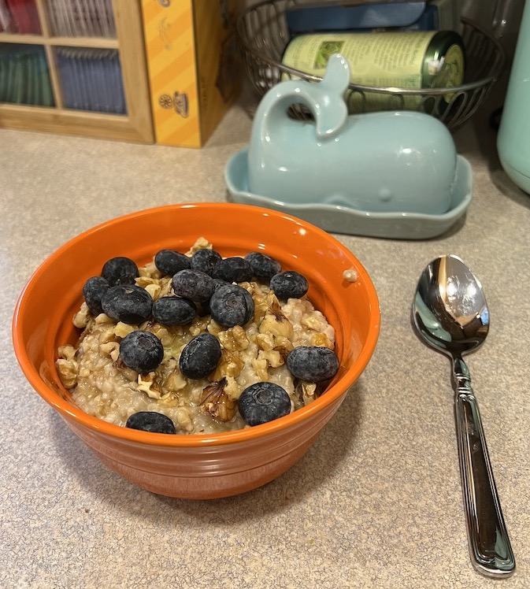

Steel-cut Oatmeal
Cut from the earth.

Description
Not your daddy's instant oats.
Implements
- Sauce pan large enough to easily hold 4 cups
- Wooden spoon or spurtle
Ingredients
- 1 cup Bob's Red Mill Steel-cut Oats
- 3 cups filtered water
- 1/4 teaspoon Redmond Sea Salt
- 1/8 teaspoon ground cardamom
- 1 tablespoon unsalted butter
- 1/2 cup fresh or frozen blueberries
- 1/4 cup crushed walnut
- Optional: splash of regular, almond, or oat milk
Steps
- Add water and salt to pot
- Bring the water to boiling
- Slowly stir-in oats
- Cook, stirring occasionally, for 20-30 minutes until water is mostly absorbed
- Remove from heat and stir-in cardamom and butter
- Cover and let sit for 10 minutes
- Place oats in service bowls (serves 2-3)
- Add some blueberries, walnuts, and splash of milk to taste
- Enjoy the fruit of your labors
HOME